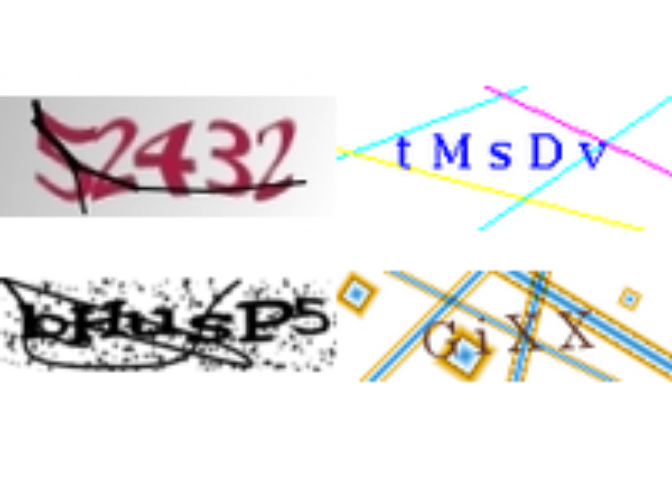
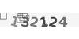

This package is an extensible API to build models and solve Captchas (Completely Automated Public Turing test to tell Computers and Humans Apart). It provides tools to read Captchas, visualize Captchas, annotate Captchas, fit models, and share fitted models.
Installation
One can install the development version of captcha package running
remotes::install_github("decryptr/captcha")Basic usage
The basic usage of captcha involves the functions read_captcha(), plot(), captcha_annotate(), captcha_load_model() and decrypt(). The diagram below summarizes the relationships between these functions. The arrows indicate the dependency of functions on objects generated by other functions.
Read and visualize
The read_captcha() function reads a character vector of image files and stores them in memory. Behind the scenes, the function uses the {magick} package to deal with the types of files that may appear (JPEG, PNG, among others).
library(captcha)
example <- "man/figures/dados_tjmg.jpeg"
captcha <- read_captcha(example)
captcha
#> format width height colorspace matte filesize density
#> 1 JPEG 100 50 sRGB FALSE 4530 72x72The function returns an object of class captcha, which can be used by other methods.
class(captcha)
#> [1] "captcha"The captcha object is a list with three elements: $img, which contains the image read from the magick package; $lab, which contains the image label (by default, NULL); and $path, which contains the path of the image.
str(captcha)
#> Class 'captcha' hidden list of 3
#> $ img :Class 'magick-image' <externalptr>
#> $ lab : NULL
#> $ path: chr "man/figures/dados_tjmg.jpeg"The read_captcha() function has an lab_in_path= parameter, which indicates whether the image path contains the label. If lab_in_path=TRUE, the function will try to extract the label from the file (getting the text that comes after the last _ of the path) and store it in the $lab element.
example <- "man/figures/mnist128c49c36e13_6297.png"
captcha <- read_captcha(example, lab_in_path = TRUE)
str(captcha)
#> Class 'captcha' hidden list of 3
#> $ img :Class 'magick-image' <externalptr>
#> $ lab : chr "6297"
#> $ path: chr "man/figures/mnist128c49c36e13_6297.png"The plot() function is a method of class S3 from base R. The function facilitates the visualization of Captchas. The function receives a list of images (obtained with the read_captcha() function) and displays the Captcha visually.
example <- "man/figures/dados_tjmg.jpeg"
captcha <- read_captcha(example)
plot(captcha)
An interesting aspect of the plot() function is that it deals with a list of Captchas. It is useful when the goal is to view several Captchas in the image simultaneously. The next image shows an example.
examples <- paste0("man/figures/", c(
"dados_tjmg.jpeg",
"dados_esaj.png",
"dados_rfb.png",
"dados_sei.png"
))
captchas <- read_captcha(examples)
plot(captchas)
By default, the plot() function arranges the images into four columns. To change the default, one can modify the options using options(captcha.print.cols = N), where N is the desired number of columns. The next image shows an example with two columns.

When the list of Captchas is too long, the plot() function displays a maximum number of images accompanied by a message. By default, this number is 100, with 25 rows and four columns. One can override the option by combining the captcha.print.cols= and captcha.print.rows= options. The next image shows an example of the function’s behavior when the number of images exceeds 100.
# more than 100 imagens:
examples <- rep("man/figures/dados_tjmg.jpeg", 110)
captchas <- read_captcha(examples)
plot(captchas)
#> ℹ Too many images, printing first 100. To override, run
#> • options('captcha.print.rows' = MAX_ROWS)
#> • options('captcha.print.cols' = COLUMNS)
It is possible to create subsets of captcha objects using the [ operator. One can also use the length() function to measure the number of images. The next image shows an example of these operations.
Finally, when the image has a label, the plot() function shows the label on the corner of the image. The following image shows an example.
example <- "man/figures/mnist128c49c36e13_6297.png"
captcha <- read_captcha(example, lab_in_path = TRUE)
plot(captcha)
Annotate
The captcha_annotate() function annotates a Captcha image, either manually or automatically. It modifies the image path and adds the text _label to the end of the file path. The function has the following parameters:
-
files=: object of class captcha read with functionread_captcha()(recommended) or character vector of file paths. -
labels=: (optional) character vector with image labels. It must have the samelength()asfiles=. The value isNULLby default, prompting the user to enter the label manually. -
path=: (optional) path of the folder to save the annotated files. By default, it saves files with modified names in the same folder as the original files. -
rm_old=: (optional) whether or not to delete the original files. Defaults toFALSE.
The captcha_annotate() function returns a vector with the paths of the modified files. The labels= parameter can handle situations where one knows the Captcha label. For example, a workflow that uses an oracle might provide the label automatically.
When the label doesn’t exist, the captcha_annotate() function opens the prompt for classification and shows the image using plot(). The following image shows an application example of the captcha_annotate() function in RStudio.

Predict
The decrypt() function returns a label for an image using a fitted model. The function takes two arguments: file=, which can be either the file path or a captcha class object, and model=, which contains an object of class luz_module_fitted, fitted using the {luz} package.
model <- captcha_load_model("cadesp")
img <- "man/figures/dados_cadesp.jpg"
captcha <- read_captcha(img)
plot(captcha)
decrypt(captcha, model)
#> [1] "dwyy"There are fitted models for several different Captchas available in the captcha package. It is possible to load a trained model using the captcha_load_model() function. The path= parameter contains either the path for a fitted model or a string with the name of a released model, like "rfb". Fitted models are stored in the captcha package repository releases, which can be downloaded using the {piggyback} package package.
Currently, the Captchas with available fitted models are trf5, tjmg, trt, esaj, jucesp, tjpe, tjrs, cadesp, sei and rfb. The table below describes the models and their accuracy.
| Name | Example | Description | Accuracy |
|---|---|---|---|
| cadesp |  |
Centro de Apoio ao Desenvolvimento da Saúde Pública | 96.37% |
| esaj |  |
Tribunal de Justiça da Bahia | 94.50% |
| jucesp | Junta Comercial de São Paulo | 89.88% | |
| rfb |  |
Receita Federal | 95.70% |
| sei |  |
Sistema Eletrônico de Informações - ME | 77.25% |
| tjmg |  |
Tribunal de Justiça de Minas Gerais | 98.35% |
| tjpe |  |
Tribunal de Justiça de Pernambuco | 91.88% |
| tjrs |  |
Tribunal de Justiça do Rio Grande do Sul | 99.57% |
| trf5 |  | Tribunal Regional Federal 5 | 98.77% |
| trt |  |
Tribunal Regional do Trabalho 3 | 98.50% |
Fit custom model
The captcha package provides a basic interface for fitting custom models from a fully labeled data. Annotation can be done manually using the captcha_annotate() function presented earlier or with another method developed by the user. The model uses a convolutional neural network architecture, similar to the LeNet-5 model.
The modeling step has some assumptions about the file names. Images must be in a folder and have the pattern path/to/file/<id>_<lab>.<ext>, where:
-
<id>: can be any name, preferably without accents or other special characters, to avoid encoding issues. It usually contains a name for the type and a hash to identify the image uniquely. Note: When annotating a file, the id must be unique, as two Captchas can have the same label. -
<lab>: is the Captcha label. It is a string of characters between[a-zA-Z0-9], which can be case-sensitive if necessary. All labels must have the same length. -
<ext>: file extension. It can be.png,.jpegor.jpg. The operations also work for the.svgformat, but it may have problems due to the image’s transparency.
The captcha_fit_model() function fits a model from a folder with annotated images. The function considers the parameters:
-
dir=: the path of the annotated files; -
dir_valid=: (optional) the path of annotated files for validation; -
prop_valid=:, the proportion of the training set to be considered as validation.prop_valid=is ignored whendir_valid=is given (by default, 20% of the dataset is considered as validation).
The captcha_fit_model() function also has some parameters related to the neural network. They are:
-
dropout=: the dropout percentage applied to the hidden layers of the network (by default, 0.25); -
dense_units=: the number of units in the hidden layer that comes after the convolutional layers (by default, 200); -
decay=: the learning rate decay percentage (by default, 0.99); -
epochs=: the number of epochs to fit the model (by default, 100).
An important note is that the model stops fitting after 20 iterations without significant increment of accuracy (chosen as 1%; for more details, see the advanced guide).
The function returns a fitted model of class luz_module_fitted, which can be saved to disk using luz_save(). One can also serialize the model to use it with other packages such as PyTorch. A tutorial on serialization can be found in the torch package documentation.
Fitting a new Captcha model can be challenging. To help with that, the captcha package documentation provides an application example. The example uses Captchas from captcha_generate() function, which generates Captchas using the magick package. The captcha_generate() function has the following parameters:
-
write_disk=: save files to disk? By default,FALSE. -
path=: Path to save files on disk, if the previous parameter isTRUE. -
chars=: Which characters to use in the image. -
n_chars=: The length of the Captcha. -
n_rows=: Height of the image, in pixels. -
n_cols=: Width of the image, in pixels. -
p_rotate=: Probability of image rotation. -
p_line=: Probability of adding a line between the letters. -
p_stroke=: Probability of adding a border to the letters. -
p_box=: Probability of adding a box (rectangle) around the letters. -
p_implode=: Probability of adding implode effects. -
p_oilpaint=: Probability to add oil paint effects. -
p_noise=: Probability of adding white noise to the background of the image. -
p_lat=: Probability of applying the local adaptive thresholding algorithm to the image.
Advanced usage
Once the premises of the classified base are met, it is possible to fit a neural network model using the captcha package. However, the training step involves many small adaptations, it was decided to export functions in two depth levels. To address that, the captcha package also provides a procedural approach to fit the model, using a step-by-step described in the advanced guide.
Contributing
One can contribute to the package through pull requests and report problems or ask questions at the issues section. See the CONTRIBUTING.md file for detailed instructions.
Code of Conduct
Please note that the captcha project is released with a Contributor Code of Conduct. By contributing to this project, you agree to abide by its terms.